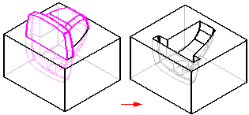

Boolean command
Performs a union, a difference, or an intersection operation on a part using a reference plane, construction surface, or construction solid as a tool.
For example, you can use the Boolean Feature command to create a cavity in a die. First, use the Part Copy command to insert an existing model into a new file as a construction body. Next, create a rectangular solid that represents the die, and then use the Boolean Feature command to subtract the construction body from the solid.
